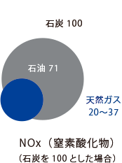
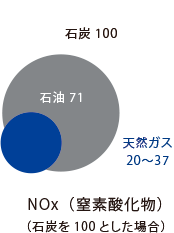

業界と会社を知る
LNGバリューチューン
図版は左へスライドできます

供給を支える工程
都市ガスとは
| 都市ガス | プロパンガス | |
| 原料 | メタンを主成分とする天然ガス | プロパン・ブタンを主成分とする液化天然ガス |
| 供給 | 気化した状態でガス導管を通じて輸送 | 液体のままボンベに詰めて輸送 |
 

導管の距離
導管の長さは、
地球１周半ぶん！
日本で液化天然ガスが使用されるようになってから、50年以上。現在、都心の地下にはガス供給用の導管が張り巡らされています。その総延長は、なんと64,545km！地球1周半、ぐるりと囲めるほどの長さになるのです。
TGPNのお客様
一般家庭から大規模施設まで、
安定供給を支える。
私たちが守っているのは、1,195万件にものぼるお客様への、ガスの安全・安定供給。一般家庭へのガスだけではなく、商業施設や学校、福祉施設、市場やプロレス会場などにも、私たちはガスをお届けしています。数・規模ともに大きく、やりがいを感じられる仕事です。
災害時の活躍
必須のライフラインを、
業界一丸で。少しでも早く
多くの人の、日常を支えるのが私たちの仕事。一方で災害などの緊急時も、ガス会社は活躍します。二次災害を防ぐとともに、全国のガス会社が復旧対象地域に応援へ。業界一丸となり、数千人体制で災害地域での復旧作業に努めます。
ビジネスの可能性
自由化は
新たなビジネスチャンス。
2017年に都市ガスは全面自由化となり、電力会社やエネルギー会社、インターネットプロバイダー会社など、様々な企業がガス事業へ参入するようになりました。価格等が自由となっただけでなく、ライフラインの統合型ビジネスが生まれるなど、新たなビジネスチャンスも広がりを見せています。